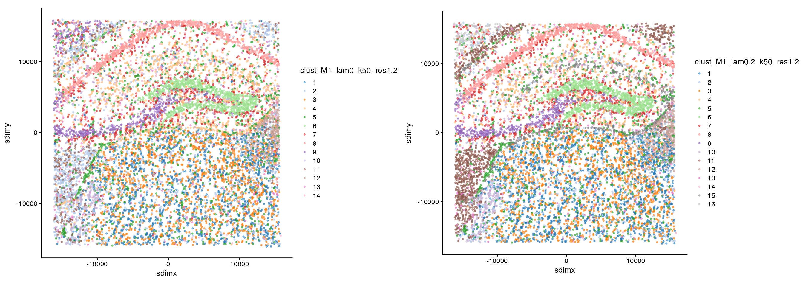

By default, runBanksyPCA uses a lazy linear operator
that computes PCA without materializing the full BANKSY matrix. This is
memory-efficient and recommended for most use cases.
However, some workflows require explicit construction of the BANKSY
matrix — for example, when using the azimuthal Gabor filter (AGF), when
access to the intermediate matrices is needed, or when using higher
harmonics (M > 0). This vignette demonstrates the
standard workflow using computeBanksy followed by
runBanksyPCA(lazy=FALSE).
library(Banksy)
library(SummarizedExperiment)
library(SpatialExperiment)
library(scuttle)
library(scater)
library(cowplot)
library(ggplot2)We use the mouse hippocampus dataset provided with Banksy.
Initialize a SpatialExperiment object and perform quality control and normalization.
se <- SpatialExperiment(assay = list(counts = gcm), spatialCoords = locs)
# QC based on total counts
qcstats <- perCellQCMetrics(se)
thres <- quantile(qcstats$total, c(0.05, 0.98))
keep <- (qcstats$total > thres[1]) & (qcstats$total < thres[2])
se <- se[, keep]
# Normalization to mean library size
se <- computeLibraryFactors(se)
aname <- "normcounts"
assay(se, aname) <- normalizeCounts(se, log = FALSE)computeBanksy computes the neighborhood matrices and
stores them as assays in the SpatialExperiment object. Setting
compute_agf=TRUE computes both the weighted neighborhood
mean
()
and the azimuthal Gabor filter
().
The number of spatial neighbors used to compute
and
are k_geom[1]=15 and k_geom[2]=30
respectively.
k_geom <- c(15, 30)
se <- computeBanksy(se, assay_name = aname, compute_agf = TRUE, k_geom = k_geom)
#> Computing neighbors...
#> Spatial mode is kNN_median
#> Parameters: k_geom=15
#> Done
#> Computing neighbors...
#> Spatial mode is kNN_median
#> Parameters: k_geom=30
#> Done
#> Computing harmonic m = 0 with 15 neighbors
#> Done
#> Computing harmonic m = 1 with 30 neighbors
#> Centering
#> DoneAfter running computeBanksy, the neighborhood matrices
are accessible as assays:
assayNames(se)
#> [1] "counts" "normcounts" "H0" "H1"We run PCA with lazy=FALSE to use the standard path,
which constructs the full BANKSY matrix via
getBanksyMatrix. Setting use_agf=TRUE uses
both
and
.
We compare non-spatial clustering (lambda=0) with BANKSY
cell-typing (lambda=0.2).
lambda <- c(0, 0.2)
set.seed(1000)
se <- runBanksyPCA(se, use_agf = TRUE, lambda = lambda, lazy = FALSE)
se <- runBanksyUMAP(se, use_agf = TRUE, lambda = lambda)
se <- clusterBanksy(se, use_agf = TRUE, lambda = lambda, resolution = 1.2)
se <- connectClusters(se)
#> clust_M1_lam0.2_k50_res1.2 --> clust_M1_lam0_k50_res1.2Visualise the clustering output:
cnames <- colnames(colData(se))
cnames <- cnames[grep("^clust", cnames)]
colData(se) <- cbind(colData(se), spatialCoords(se))
plot_nsp <- plotColData(se,
x = "sdimx", y = "sdimy",
point_size = 0.6, colour_by = cnames[1]
)
plot_bank <- plotColData(se,
x = "sdimx", y = "sdimy",
point_size = 0.6, colour_by = cnames[2]
)
plot_grid(plot_nsp + coord_equal(), plot_bank + coord_equal(), ncol = 2)
The full BANKSY matrix can be retrieved with
getBanksyMatrix. This is useful for custom downstream
analyses.
banksy_matrix <- getBanksyMatrix(se, M = 1, lambda = 0.2,
assay_name = aname, scale = TRUE)
dim(banksy_matrix)
#> [1] 360 10205
sessionInfo()
#> R version 4.5.1 (2025-06-13)
#> Platform: aarch64-apple-darwin20
#> Running under: macOS Sonoma 14.6.1
#>
#> Matrix products: default
#> BLAS: /Library/Frameworks/R.framework/Versions/4.5-arm64/Resources/lib/libRblas.0.dylib
#> LAPACK: /Library/Frameworks/R.framework/Versions/4.5-arm64/Resources/lib/libRlapack.dylib; LAPACK version 3.12.1
#>
#> locale:
#> [1] en_US.UTF-8/en_US.UTF-8/en_US.UTF-8/C/en_US.UTF-8/en_US.UTF-8
#>
#> time zone: America/Los_Angeles
#> tzcode source: internal
#>
#> attached base packages:
#> [1] stats4 stats graphics grDevices utils datasets methods
#> [8] base
#>
#> other attached packages:
#> [1] cowplot_1.2.0 scater_1.37.0
#> [3] ggplot2_3.5.2 scuttle_1.19.0
#> [5] SpatialExperiment_1.18.1 SingleCellExperiment_1.30.1
#> [7] SummarizedExperiment_1.39.1 Biobase_2.69.0
#> [9] GenomicRanges_1.61.1 Seqinfo_0.99.1
#> [11] IRanges_2.43.0 S4Vectors_0.47.0
#> [13] BiocGenerics_0.55.0 generics_0.1.4
#> [15] MatrixGenerics_1.21.0 matrixStats_1.5.0
#> [17] Banksy_1.9.2 BiocStyle_2.37.1
#>
#> loaded via a namespace (and not attached):
#> [1] gridExtra_2.3 rlang_1.1.6 magrittr_2.0.3
#> [4] RcppAnnoy_0.0.22 compiler_4.5.1 sccore_1.0.6
#> [7] systemfonts_1.2.3 vctrs_0.6.5 pkgconfig_2.0.3
#> [10] crayon_1.5.3 fastmap_1.2.0 magick_2.8.7
#> [13] XVector_0.49.0 labeling_0.4.3 rmarkdown_2.29
#> [16] UCSC.utils_1.5.0 ggbeeswarm_0.7.2 ragg_1.4.0
#> [19] xfun_0.52 cachem_1.1.0 beachmat_2.25.1
#> [22] GenomeInfoDb_1.45.7 jsonlite_2.0.0 DelayedArray_0.35.2
#> [25] BiocParallel_1.43.4 irlba_2.3.5.1 parallel_4.5.1
#> [28] aricode_1.0.3 R6_2.6.1 bslib_0.9.0
#> [31] RColorBrewer_1.1-3 leidenAlg_1.1.5 jquerylib_0.1.4
#> [34] Rcpp_1.1.0 bookdown_0.45 knitr_1.50
#> [37] Matrix_1.7-3 igraph_2.1.4 tidyselect_1.2.1
#> [40] dichromat_2.0-0.1 abind_1.4-8 yaml_2.3.10
#> [43] viridis_0.6.5 codetools_0.2-20 lattice_0.22-7
#> [46] tibble_3.3.0 withr_3.0.2 evaluate_1.0.4
#> [49] desc_1.4.3 mclust_6.1.1 pillar_1.11.0
#> [52] BiocManager_1.30.26 dbscan_1.2.2 scales_1.4.0
#> [55] glue_1.8.0 tools_4.5.1 BiocNeighbors_2.3.1
#> [58] data.table_1.17.6 ScaledMatrix_1.16.0 fs_1.6.6
#> [61] grid_4.5.1 RcppHungarian_0.3 beeswarm_0.4.0
#> [64] BiocSingular_1.24.0 vipor_0.4.7 cli_3.6.5
#> [67] rsvd_1.0.5 textshaping_1.0.1 S4Arrays_1.9.1
#> [70] viridisLite_0.4.2 dplyr_1.1.4 uwot_0.2.3
#> [73] gtable_0.3.6 sass_0.4.10 digest_0.6.37
#> [76] SparseArray_1.9.0 ggrepel_0.9.6 rjson_0.2.23
#> [79] htmlwidgets_1.6.4 farver_2.1.2 htmltools_0.5.8.1
#> [82] pkgdown_2.1.3 lifecycle_1.0.4 httr_1.4.7